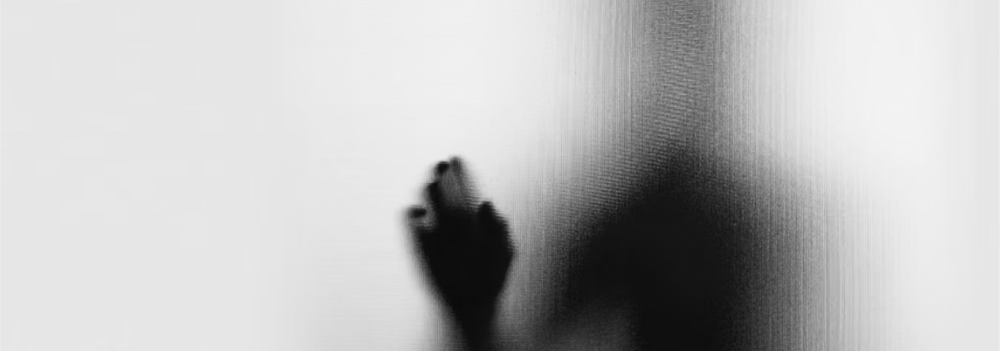

无创
Non-invasive
灵息NEOBREATH
Inhalable brain-computer interface
我们重新定义人机交互 ——
通过一次自然的吸入，让意念直达数字世界
Redefining human-computer interaction —
No longer keyboards or voice, no need to “speak out”
A single natural inhalation, thoughts directly reach the digital world
Core concept
Non-invasive
Metabolizable
Demedicalized
Vision
From “Machines Adapting to Humans” to “Human-Machine Symbiosis”
Interaction Returns to Instinct: Thoughts Instantly Realized
Why choose inhalation
Other brain-machine methods
Pain point
Invasive
Craniotomy implantation
Risk of infection
Rejection reaction
Psychological rejection
Non-invasive
Poor signal
Uncomfortable to wear
Obtrusive appearance
Eye movement Gestures
Limited mobility
Fatigue
High learning cost
Core logic
吸入式是当前最接近 “无感交互” 的技术路径：不依赖外部设备、不暴露意图、不改变生活习惯
Interaction is continuously being reduced — less medium, fewer actions, less loss. Inhalation-based methods are currently the technology closest to “imperceptible interaction”: they do not rely on external devices, do not reveal intentions, and do not change habits.
Advantage
Non-invasive means popular
No craniotomy, no electrodes, inhalation, natural connection, suitable for daily use
Metabolizable means safe
The nanoparticle components are disclosed, and after the task they are naturally excreted through breathing and the kidneys.
Local means sovereignty
All brainwave data is stored locally, and users can delete it with one click.
Art is acceptance
Demedicalization and aesthetic design let technology blend into life.
Experience is trust
Users can experience thought-based commands the first time they inhale, building trust through intuition.

我们的技术
Our technologyAt the intersection of interaction and neuroscience, redefining the way humans and machines communicate
传统脑机接口困于侵入手术，而灵息开辟了一条全新的路径 —— 雾化吸入式纳米神经接口。通过呼吸这一体能行为，纳米颗粒沿嗅神经通路直达颅叶皮层，形成临时、可代谢的意念连接。
这不是穿戴，不是植入，而是无形技术。我们让大脑与数字世界之间，不再有阻隔。信号转化为意念，意念转化为行动。
Traditional brain-computer interfaces are constrained by invasive surgery, while Lingxi has opened an entirely new path, the nebulized inhalable nano-neural interface. Through the instinctive act of breathing, nanoparticles travel along the olfactory nerve pathway directly to the frontal cortex, forming a temporary, metabolizable connection of thought
This is neither wearable nor implantable, but an invisible technology. We remove any barrier between the brain and the digital world. Signals are converted into thoughts, and thoughts are converted into actions
我们的目标
Our goalPromote neural interaction into daily life from the perspective of family members.
我们致力于打造与人体无缝融合、可代谢、可信任的下一代脑机接口。从一开始，安全性、可及性与可靠性就被置于工程核心。
我们相信，未来的人机共生应回归呼吸与意识本身。灵息的使命，是让每个人都能触达自然延伸。
We are committed to creating the next-generation brain-machine interface that seamlessly integrates with the human body, is metabolizable, and trustworthy. From the very beginning, safety, accessibility, and reliability have been placed at the core of engineering
We believe that the future of human-machine symbiosis should return to breathing and consciousness itself. The mission of Lingxi is to make a natural extension accessible to everyone